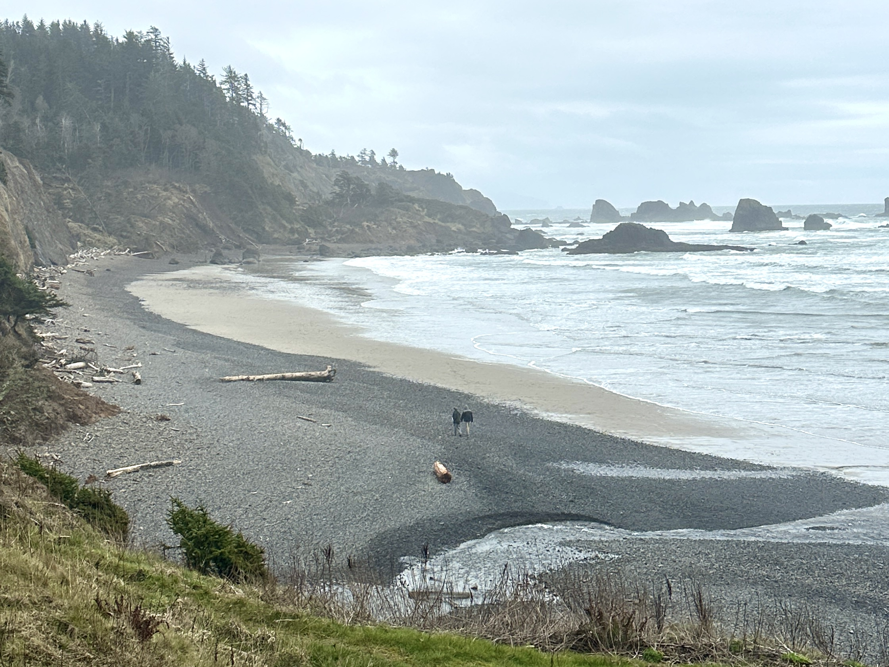

More About Me
My Work Life
I’m driven by curiosity and a love for discovery — at work, that means tackling complex problems, and outside of it, it means hiking, exploring, and hanging out with my dog. I enjoy learning from every adventure and bringing that sense of wonder into everything I do.
For a quick overview, download my resume
Operations Administrator
HNJ Group
Falls Church, VA | Sept. 2024 – Present
- System & Data Management – Provide front-line operational support by managing business accounts, identifying and resolving reporting errors, and correcting data discrepancies to ensure systems remain accurate, accessible, and optimized for executive use.
- Audit & Compliance Oversight – Conduct regular multi-location audits across payroll, financial, and marketing systems. Through detailed analysis, I identify discrepancies, implement corrective measures, and maintain compliance with internal standards, directly improving data reliability and operational performance.
- Cross-Functional Coordination – Manage contractor activities by reviewing data submissions, validating operational metrics, and enforcing consistency with established procedures. My oversight ensures alignment between on-the-ground execution and corporate objectives.
Research Data Intern
Research conducted with the Rosenberg Laboratory in Evolutionary Biological Data Science.
Virginia Commonwealth University, Center for Biological Data Science
Richmond, VA | May 2023 – May 2024
- Data Pipeline Development – Designed and maintained a Python-based data pipeline capable of processing and analyzing large-scale biological datasets. By automating manual workflows and optimizing performance, I reduced processing time and improved reproducibility across research projects.
- High-Performance Computing – Leveraged Linux-based cluster computing resources to parallelize data transformations and analyses. This approach significantly accelerated processing of a 120 GB genomic dataset, enabling research teams to derive insights faster and with greater efficiency.
- Statistical Analysis & Insight Generation – Applied regression models to detect and interpret trends within genomic data, revealing significant patterns that contributed to research findings. These results provided actionable insights that informed experimental design and guided strategic decisions within the lab.
Database Analyst
Virginia Commonwealth University, Life Sciences
Richmond, VA | Jan. 2023 – June 2023
- Python Automation & Data Integration – Developed scripts to automate extraction, cleaning, and integration of species data, improving update efficiency and ensuring accuracy for the Reptile Database (reptile-database.org).
- Data Mining & Validation – Implemented advanced data mining methods to clean, validate, and structure large volumes of unstructured datasets. This work enabled more reliable species classification and supported the overall integrity of the database.
- Machine Learning for Multilingual Data – Applied natural language processing and classification algorithms to identify and categorize passages in multiple languages. This enhanced the database’s capability to incorporate multilingual sources, broadening its usefulness for researchers.
Research Laboratory Technician
Research conducted with the Olivares-Navarrete Laboratory.
Virginia Commonwealth University, College of Engineering
Richmond, VA | Sept. 2021 – May 2022
- Animal Handling & Surgical Procedures – Administered anesthetics and performed surgical procedures on mice, maintaining strict compliance with ethical guidelines and ensuring accurate, careful handling.
- Sample Preparation & Cellular Studies – Extracted bone tissue to obtain cells for immunological experiments, enabling investigations into cellular function and supporting the lab’s broader research objectives.
- Research Support & Laboratory Practices – Assisted with routine lab operations, maintained organized records, and followed protocols to ensure data reliability and reproducibility.
- Python (data analysis, scripting, machine learning)
- R (statistical analysis, data visualization)
- SQL (PostgreSQL, database querying)
- Bash/Zsh (automation, Linux shell scripting)
- Linux command-line & environment management
- Pandas, NumPy (data manipulation and analysis)
- Data visualization: Matplotlib, Seaborn, Plotly
- TensorFlow, Scikit-learn (machine learning)
- Jupyter Notebook (interactive analysis & documentation)
- Version control with Git/GitHub
- Data cleaning, transformation, and integration
- Statistics & regression analysis
- Machine learning model design and evaluation
- Project management & cross-functional collaboration
- Problem-solving and process improvement
- Technical documentation & reporting
Center for Biological Data Science, Richmond, VA
- M.S., Biological Data Science — May 2024
- Bioinformatics Graduate Student Organization — May 2023 – May 2024
- B.S., Interdisciplinary Science (Biology), minor in Chemistry — May 2022
Life Outside Work
Here are some highlights from my recent adventures:

Harper’s Ferry, September 2025.

Mt. Rainier, July 2025.

Oregon Coast, March 2025.